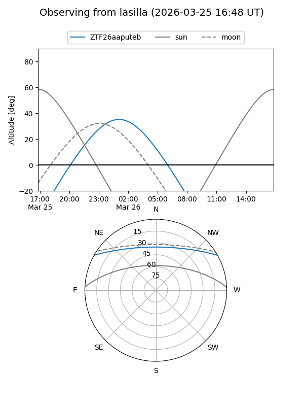
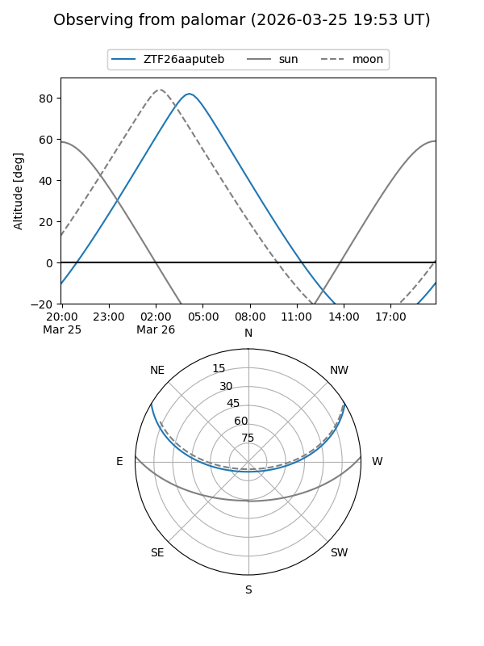

ZTF26aaputeb
Target ZTF26aaputeb at 2026-03-26 04:23
Aliases and brokers:
FINK: link
Lasair: link
ALeRCE: link
alt names
ZTF26aaputeb (ztf,fink_ztf)
Coordinates:
equatorial (ra, dec) = 128.3192,+25.57788
equatorial (HMS+DMS) = 08:33:16.61,+25:34:40.38
galactic (l, b) = (198.6421,+32.81695)
Flags:
Photometry:
last ztfg=19.91
1 ztfg detections
Lightcurve
Visibility


Additional plots